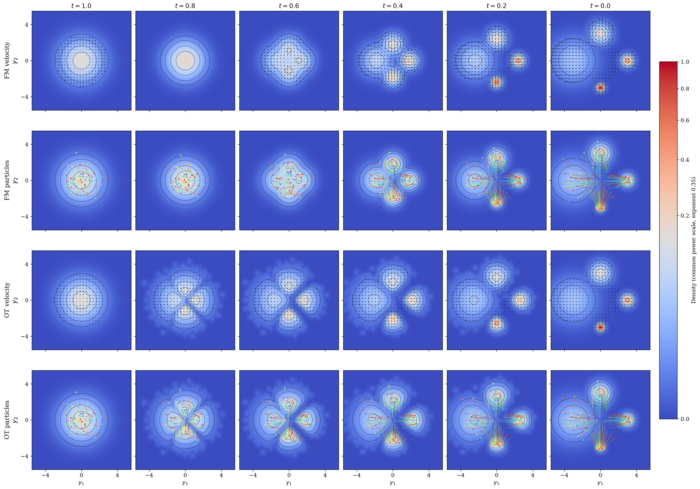

An illustrated, pedagogical introduction
Flow Matching and Optimal Transport: An Illustrated Introduction to Wasserstein–Otto Geometry
From a learned velocity field to the geometry of probability densities.

Abstract
We recall and derive the equations underlying Flow Matching, making explicit the probability density function of the linearly interpolated random variable and relating it to the transporting velocity field through the continuity equation. We visualise how the initial density is transported and compare the resulting path with a geodesic in Wasserstein–Otto geometry. We demonstrate that, for an isotropic Gaussian initial law, the Flow Matching velocity field is the minimum-energy representative of the density variation at each time, among fields satisfying the continuity equation, even though the path is generally not a geodesic under the Wasserstein–Otto metric. We explain the distinction between this local minimisation and the minimisation of the action over paths with fixed endpoints using explicit calculations and illustrations.
Keywords: Flow Matching; optimal transport; Wasserstein–Otto geometry; generative modelling; continuity equation; Wasserstein geodesics.
What we look at
- The continuity equation and preservation of mass.
- The density and velocity of the independent linear interpolation.
- Minimum-energy velocity fields and Wasserstein–Otto geodesics.
- Particle trajectories and the role of the initial distribution.
Related illustrated notes
Fisher–Rao and Wasserstein–Otto: a comparative atlas · Pullback Fisher–Rao atlas